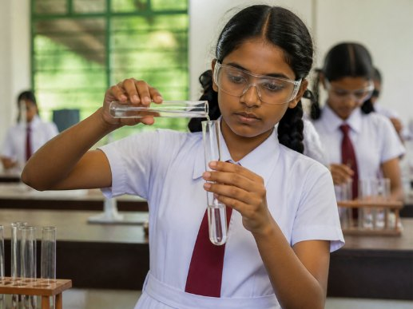

Read the safety rules
Every lab opens with a short safety briefing. Put on your goggles to begin.
Pipette, titrate, heat and test, just like in the school lab. Watch every colour change up close, learn the safety rules, and check your answers in Sinhala, English or Tamil.
Each practical follows the NIE handbook order. If you do a step in the wrong order, the lab explains why, kindly.
Every lab opens with a short safety briefing. Put on your goggles to begin.
Nimali, a student guide, shows the whole practical step by step.
Real apparatus, realistic results and named colour changes. Steps tick off as you go.

Short exam-style questions with explanations. Your best score is saved on this device.
Open any practical. They work on phones, tablets and computers.
Aims, apparatus, procedure and questions follow the G.C.E. (A/L) Chemistry Practical Handbook (2018).
Switch language at any time. The choice is remembered across all practicals.
Each practical is a single page with no installs or accounts, so it also works on a school projector.